brainClass: Get started
Mengbo Li
School of Mathematics and Statistics, The University of Sydney, AustraliaSource:
vignettes/brainClass.Rmd
brainClass.RmdOverview
Here we present an example of the brainClass workflow to perform transcriptional-data-guided fMRI network classification and the post-hoc evaluation using the COBRE data set.
Install brainClass
# install.packages('devtools')
devtools::install_github("Mengbo-Li/brainClass")Load packages
library(tidyverse)
library(brainClass)
## if needed
## devtools::install_github('jesusdaniel/graphclass')
library(graphclass)Load data
- Gene expression data from Allen Human Brain Atlas (AHBA)
This is an ROI-by-gene data frame, where ROIs (regions of interest) are defined by the Power brain parcellation. The Power parcellation defines 264 brain regions, out of which we are able to map AHBA gene expression samples in to 248 ROIs.
class(ahba)
[1] "data.frame"
dim(ahba)
[1] 248 19227
ahba[1:5, 1:10]
7249 51312 54708 56172 151295 254910 7486 643858 4296 55323
1 -0.0559 0.9041 0.2480 0.6225 -0.058305 -0.2234 -0.04350 -0.0687 -0.20332 0.1353
10 -0.0801 -0.1264 0.1999 -0.1327 -0.723591 -0.3544 0.10761 0.2484 -0.22604 -0.0250
100 0.0766 0.0693 -0.0651 0.0465 -0.401925 -0.3309 -0.00106 0.0383 -0.00497 -0.0148
101 -0.1631 0.1146 -0.0210 -0.2545 -0.000259 0.0274 -0.16150 -0.1989 0.57247 0.0365
102 0.3529 0.0731 -0.2145 -0.1050 -0.463868 -0.5105 -0.07380 -0.4077 0.23011 -0.0918- COBRE fMRI network data
Note that ROI 75 is missing in COBRE data.
X_cobre <- COBRE.data$X.cobre
y_cobre <- COBRE.data$Y.cobre
colnames(X_cobre) <- getEdgeLabel(node = c(1:74, 76:264))
rownames(X_cobre) <- as.character(1:124)
y_cobre[y_cobre == -1] <- 0
table(y_cobre)
y_cobre
0 1
70 54 - Gene set collections (GSCs) from MSigDB v7.0
Genes are identified by entrez ID.
length(gscv7.0)
[1] 8
names(gscv7.0)
[1] "position" "kegg" "reactome" "tft" "bp" "cc" "mf" "immune"
length(gscv7.0$kegg)
[1] 186
gscv7.0$kegg[1:3]
$KEGG_GLYCOLYSIS_GLUCONEOGENESIS
[1] "55902" "2645" "5232" "5230" "5162" "5160" "5161" "55276" "7167" "84532"
[11] "2203" "125" "3099" "126" "3098" "3101" "127" "5224" "128" "5223"
[21] "124" "230" "501" "92483" "5313" "160287" "2023" "5315" "5214" "669"
[31] "5106" "5105" "219" "217" "218" "10327" "8789" "5213" "5211" "3948"
[41] "2597" "2027" "2026" "441531" "131" "130" "3945" "220" "221" "222"
[51] "223" "224" "130589" "226" "1738" "1737" "229" "57818" "3939" "2538"
[61] "5236" "2821"
$KEGG_CITRATE_CYCLE_TCA_CYCLE
[1] "3420" "1743" "5106" "1431" "5162" "5105" "5160" "5161" "283398" "2271"
[11] "6392" "4967" "6390" "3419" "6391" "3418" "3417" "48" "47" "4191"
[21] "1738" "4190" "1737" "55753" "5091" "6389" "8802" "8803" "8801" "3421"
[31] "50"
$KEGG_PENTOSE_PHOSPHATE_PATHWAY
[1] "6120" "22934" "55276" "25796" "5634" "8789" "5213" "5211" "6888" "7086"
[11] "2203" "84076" "5226" "64080" "226" "230" "229" "9563" "729020" "221823"
[21] "5631" "51071" "2539" "5236" "8277" "5214" "2821" - DiGSeE scores of GSCs for use in the post-hoc evaluation.
DiGSeE scores of schizophrenia relevance are constructed for each GSC. GSCs are filtered by size. We keep gene sets with at least 5 genes when deriving DiGSeE scores for the gene sets. Further details on how we obtained these scores are available in the Supplementary methods to the manuscript.
length(digsee)
[1] 8
names(digsee)
[1] "tft" "kegg" "bp" "cc" "mf" "reactome" "position" "immune"
head(digsee$kegg)
prop sumScore avgScore
KEGG_GLYCOLYSIS_GLUCONEOGENESIS 0.0909 0.965 0.0877
KEGG_CITRATE_CYCLE_TCA_CYCLE 0.0000 0.000 0.0000
KEGG_PENTOSE_PHOSPHATE_PATHWAY 0.2000 0.953 0.1907
KEGG_GALACTOSE_METABOLISM 0.0000 0.000 0.0000
KEGG_FATTY_ACID_METABOLISM 0.2857 1.967 0.2810
KEGG_STEROID_HORMONE_BIOSYNTHESIS 0.2500 2.277 0.2846
brainClass network classification
For example, let us use the KEGG pathways to construct gene set expression networks.
Obtain gene set edge groups
- Downsize gene expression data (Optional but recommended)
ahba <- filterGeneExpr(ahba)
ahba <- ahba[rownames(ahba)[order(as.numeric(rownames(ahba)))],
]
ahba <- ahba[-which(rownames(ahba) == "75"), ]
dim(ahba)
[1] 247 4807- Get a gene set collection (GSC) of interest and filter by gene set sizes
The filtering on GSC by gene set sizes is optional by recommended.
kegg <- filterGeneSets(geneSetList = gscv7.0$kegg, candidateGenes = colnames(ahba),
min.size = 5, max.size = Inf)
summary(sapply(kegg, length))
Min. 1st Qu. Median Mean 3rd Qu. Max.
5 9 15 21 27 109 If one wishes to keep all gene sets from the GSC, set min.size to 2 and max.size to Inf. The min.size parameter cannot be smaller than 2 in order to calculate correlations. Note that, it is still necessary to filter out genes that do not have gene expression information in the reference transcriptional data set, which is the (filtered) AHBA dataset.
# Not run
kegg <- filterGeneSets(geneSetList = gscv7.0$kegg, candidateGenes = colnames(ahba),
min.size = 2, max.size = Inf)- Get gene set edge groups
keggEdgeGrp <- getGeneSetEdgeGroup(geneExpr = ahba, geneSetList = kegg,
cutoff = 0.99)Network classification and prediction
Take one fold from one repeat of 10-fold cross validation as an example:
edgesToClassify <- unlist(keggEdgeGrp)
edgesToClassify <- edgesToClassify[!duplicated(edgesToClassify)]
set.seed(10)
cvfolds <- getCVfolds(y_cobre, k = 10, repeats = 1)
trainid <- cvfolds[[1]] %>%
filter(k != 1)
fit <- brainclass(X = X_cobre[trainid$Ind, edgesToClassify],
y = y_cobre[trainid$Ind], edgeGrp = keggEdgeGrp)Prediction on the test set
testid <- cvfolds[[1]] %>%
filter(k == 1)
test <- predict(fit, X = X_cobre[testid$Ind, edgesToClassify],
type = "class")
table(test, y_cobre[testid$Ind])
test 0 1
0 7 0
1 0 6Post-hoc Interpretation
Example 1
First, as an example, we evaluate the edge selection results by glmnet::glmnet applied on the COBRE data set by differnt metrics with KEGG pathways.
- Edge selection results by glmnet
Obtain the edge labels of selected features, that is, edges with a non-zero fitted coefficient.
# install.package('glmnet')
library(glmnet)
cvfit <- cv.glmnet(X_cobre, y_cobre, family = "binomial", nfolds = 10)
selectedEdges <- coef(cvfit, s = "lambda.min")
selectedEdges <- names(selectedEdges[selectedEdges@i + 1, ])[-1]
length(selectedEdges)
[1] 86- Obtain edgewise metrics
Evaluate by KEGG pathways:
metrics <- posthoc.edge(selected.edgeLabels = selectedEdges,
all.edgeLabels = colnames(X_cobre), geneSetList = kegg, geneExpr = ahba,
iter = 100)
DT::datatable(signif(metrics, 2), width = "90%", options = list(scrollX = TRUE))- Association with prior knowledge - the DiGSeE database
Get “truth” - KEGG pathways with a top 5% in both average and sum DiGSeE scores are assumed to be associated with schizophrenia.
metrics <- merge(metrics, digsee[["kegg"]], by = 0) %>%
mutate(truth = ((avgScore >= quantile(avgScore, 0.95)) +
(sumScore >= quantile(sumScore, 0.95)) > 0) + 0)
table(metrics$truth)
0 1
137 12
metrics$Row.names[metrics$truth == 1]
[1] "KEGG_ALZHEIMERS_DISEASE" "KEGG_AMYOTROPHIC_LATERAL_SCLEROSIS_ALS"
[3] "KEGG_ARGININE_AND_PROLINE_METABOLISM" "KEGG_CALCIUM_SIGNALING_PATHWAY"
[5] "KEGG_HUNTINGTONS_DISEASE" "KEGG_LINOLEIC_ACID_METABOLISM"
[7] "KEGG_LONG_TERM_POTENTIATION" "KEGG_MAPK_SIGNALING_PATHWAY"
[9] "KEGG_NEUROACTIVE_LIGAND_RECEPTOR_INTERACTION" "KEGG_PATHWAYS_IN_CANCER"
[11] "KEGG_PRION_DISEASES" "KEGG_TRYPTOPHAN_METABOLISM" Generate the receiver operating characteristic (ROC) curve for each metric:
rocs <- getROC(truth = metrics$truth, test.metric = metrics$Jaccard,
step.size = 0.01)
ggplot(rocs, aes(x = fpr, y = tpr)) + geom_line() + geom_abline(slope = 1,
intercept = 0, color = "darkred", linetype = 2) + labs(x = "FPR",
y = "TPR") + theme_minimal()
Also, calculate the area under this ROC curve (AUC):
DescTools::AUC(rocs$fpr, rocs$tpr)
[1] 0.609Notice that, with p-valued metrics, signigicance is indicated by smaller values. We thereby need the “one-minus” transformation when calcuating the ROC curve:
rocs <- getROC(truth = metrics$truth, test.metric = 1 - metrics$Jaccard.PValue,
step.size = 0.01)
ggplot(rocs, aes(x = fpr, y = tpr)) + geom_line() + geom_abline(slope = 1,
intercept = 0, color = "darkred", linetype = 2) + labs(x = "FPR",
y = "TPR") + theme_minimal()
DescTools::AUC(rocs$fpr, rocs$tpr)
[1] 0.509Example 2
Next, we evaluate the same selected edges by glmnet with the Jaccard index by different GSCs (say, KEGG, REACTOME, transcription factor targets and positional).
gscs <- c("kegg", "reactome", "position", "tft")
rocs <- lapply(gscs, function(ind) {
# filter the gene sets by size
gsc_i <- filterGeneSets(geneSetList = gscv7.0[[ind]], candidateGenes = colnames(ahba),
min.size = 5, max.size = Inf)
# obtain Jaccard indices
res <- posthoc.edge(selected.edgeLabels = selectedEdges,
all.edgeLabels = colnames(X_cobre), geneSetList = gsc_i,
geneExpr = ahba, get.jaccard = TRUE, get.betweenness = FALSE,
iter = 100)
# get roc
res <- merge(res, digsee[[ind]], by = 0) %>%
mutate(truth = ((avgScore >= quantile(avgScore, 0.95)) +
(sumScore >= quantile(sumScore, 0.95)) > 0) + 0)
roc <- getROC(truth = res$truth, test.metric = res$Jaccard,
step.size = 0.01)
roc$gsc <- ind
return(roc)
}) %>%
do.call(rbind, .)Visualisation:
ggplot(rocs, aes(x = fpr, y = tpr, color = gsc)) + geom_line() +
geom_abline(slope = 1, intercept = 0, color = "darkred",
linetype = 2) + labs(x = "FPR", y = "TPR", color = "GSC") +
ggtitle("ROC curves by Jaccard Index") + theme_minimal()
AUCs:
group_by(rocs, gsc) %>%
summarise(auc = DescTools::AUC(fpr, tpr))
# A tibble: 4 x 2
gsc auc
<chr> <dbl>
1 kegg 0.609
2 position 0.609
3 reactome 0.637
4 tft 0.531References
Aine, C. J., Bockholt, H. J., Bustillo, J. R., Cañive, J. M., Caprihan, A., Gasparovic, C., … & Calhoun, V. D. (2017). Multimodal neuroimaging in schizophrenia: description and dissemination. Neuroinformatics, 15(4), 343-364.
Friedman, J., Hastie, T., & Tibshirani, R. (2010). Regularization paths for generalized linear models via coordinate descent. Journal of statistical software, 33(1), 1.
Hawrylycz, M. J., Lein, E. S., Guillozet-Bongaarts, A. L., Shen, E. H., Ng, L., Miller, J. A., … & Jones, A. R. (2012). An anatomically comprehensive atlas of the adult human brain transcriptome. Nature, 489(7416), 391-399.
Kim, J., So, S., Lee, H. J., Park, J. C., Kim, J. J., & Lee, H. (2013). DigSee: disease gene search engine with evidence sentences (version cancer). Nucleic acids research, 41(W1), W510-W517.
Li, M., Kessler, D., Arroyo, J., Freytag, S., Bahlo, M., Levina, E., & Yang, J. Y. H. (2020). Guiding and interpreting brain network classification with transcriptional data. bioRxiv.
Liberzon, A., Subramanian, A., Pinchback, R., Thorvaldsdóttir, H., Tamayo, P., & Mesirov, J. P. (2011). Molecular signatures database (MSigDB) 3.0. Bioinformatics, 27(12), 1739-1740.
Power, J. D., Cohen, A. L., Nelson, S. M., Wig, G. S., Barnes, K. A., Church, J. A., … & Petersen, S. E. (2011). Functional network organization of the human brain. Neuron, 72(4), 665-678.
Relión, J. D. A., Kessler, D., Levina, E., & Taylor, S. F. (2019). Network classification with applications to brain connectomics. The annals of applied statistics, 13(3), 1648.
Zeng, Y., & Breheny, P. (2016). Overlapping group logistic regression with applications to genetic pathway selection. Cancer informatics, 15, CIN-S40043.
Session Information
sessionInfo()
R version 4.0.5 (2021-03-31)
Platform: x86_64-apple-darwin17.0 (64-bit)
Running under: macOS Catalina 10.15.7
Matrix products: default
BLAS: /System/Library/Frameworks/Accelerate.framework/Versions/A/Frameworks/vecLib.framework/Versions/A/libBLAS.dylib
LAPACK: /Library/Frameworks/R.framework/Versions/4.0/Resources/lib/libRlapack.dylib
locale:
[1] en_AU.UTF-8/en_AU.UTF-8/en_AU.UTF-8/C/en_AU.UTF-8/en_AU.UTF-8
attached base packages:
[1] stats graphics grDevices utils datasets methods base
other attached packages:
[1] igraph_1.2.6 DescTools_0.99.41 glmnet_4.1-1 Matrix_1.3-3 graphclass_1.1
[6] brainClass_0.1.0 forcats_0.5.1 stringr_1.4.0 dplyr_1.0.6 purrr_0.3.4
[11] readr_1.4.0 tidyr_1.1.3 tibble_3.1.1 ggplot2_3.3.3 tidyverse_1.3.1
[16] BiocStyle_2.18.1
loaded via a namespace (and not attached):
[1] colorspace_2.0-1 ellipsis_0.3.2 class_7.3-19 rprojroot_2.0.2
[5] fs_1.5.0 gld_2.6.2 rstudioapi_0.13 proxy_0.4-25
[9] farver_2.1.0 cvTools_0.3.2 DT_0.18 fansi_0.4.2
[13] mvtnorm_1.1-1 lubridate_1.7.10 xml2_1.3.2 codetools_0.2-18
[17] splines_4.0.5 cachem_1.0.4 rootSolve_1.8.2.1 robustbase_0.93-7
[21] knitr_1.33 jsonlite_1.7.2 broom_0.7.6 dbplyr_2.1.1
[25] grpregOverlap_2.2-0 BiocManager_1.30.15 compiler_4.0.5 httr_1.4.2
[29] backports_1.2.1 assertthat_0.2.1 fastmap_1.1.0 cli_2.5.0
[33] formatR_1.9 htmltools_0.5.1.1 tools_4.0.5 gtable_0.3.0
[37] glue_1.4.2 lmom_2.8 Rcpp_1.0.6 cellranger_1.1.0
[41] jquerylib_0.1.4 pkgdown_1.6.1 vctrs_0.3.8 iterators_1.0.13
[45] crosstalk_1.1.1 grpreg_3.3.1 xfun_0.22 rbibutils_2.1.1
[49] rvest_1.0.0 lifecycle_1.0.0 DEoptimR_1.0-8 MASS_7.3-54
[53] scales_1.1.1 ragg_1.1.2 hms_1.0.0 expm_0.999-6
[57] yaml_2.2.1 Exact_2.1 memoise_2.0.0 sass_0.4.0
[61] stringi_1.6.1 highr_0.9 desc_1.3.0 foreach_1.5.1
[65] e1071_1.7-6 boot_1.3-28 shape_1.4.5 Rdpack_2.1.1
[69] rlang_0.4.11 pkgconfig_2.0.3 systemfonts_1.0.2 evaluate_0.14
[73] lattice_0.20-44 htmlwidgets_1.5.3 labeling_0.4.2 tidyselect_1.1.1
[77] magrittr_2.0.1 bookdown_0.22 R6_2.5.0 generics_0.1.0
[81] DBI_1.1.1 pillar_1.6.0 haven_2.4.1 withr_2.4.2
[85] survival_3.2-11 modelr_0.1.8 crayon_1.4.1 utf8_1.2.1
[89] rmarkdown_2.8 grid_4.0.5 readxl_1.3.1 data.table_1.14.0
[93] reprex_2.0.0 digest_0.6.27 textshaping_0.3.4 munsell_0.5.0
[97] bslib_0.2.5